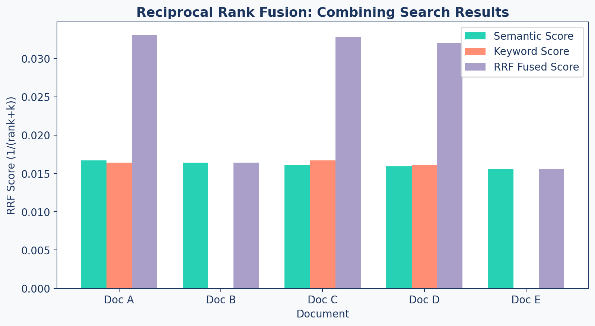

flowchart LR
A["User Query"] --> B["Query<br/>Processing"]
B --> C["Hybrid<br/>Retrieval"]
C --> D{"Top 50<br/>Candidates"}
D --> E["Re-Ranking<br/>(Cross-Encoder)"]
E --> F{"Top 5<br/>Relevant"}
F --> G["LLM<br/>Generation"]
style A fill:#9B8EC0,stroke:#1C355E,color:#fff
style B fill:#9B8EC0,stroke:#1C355E,color:#fff
style C fill:#00C9A7,stroke:#1C355E,color:#fff
style D fill:#00C9A7,stroke:#1C355E,color:#fff
style E fill:#FF7A5C,stroke:#1C355E,color:#fff
style F fill:#FF7A5C,stroke:#1C355E,color:#fff
style G fill:#1C355E,stroke:#1C355E,color:#fff
Beyond Basic Search
RAG Foundations & Data Pipelines — Session 4
2026-02-28
A. Why Simple Search Fails
When cosine similarity isn’t enough
Agenda
- A. Why Simple Search Fails — Limitations of basic vector search
- B. Hybrid Search — Combining keyword and semantic retrieval
- C. Re-Ranking — The cross-encoder quality gate
- D. Query Understanding — Preprocessing and intent classification
- E. Query Expansion — Generating better search queries
- F. Wrap-up — The complete advanced retrieval pipeline
When Semantic Search Misses
Exact Keywords
“Error 503” or “sku-123”
Vectors capture meaning, sometimes losing exact tokens.
Query Mismatch
User: “How do I fix X?” Doc: “Troubleshooting X”
Semantic distance is larger than expected.
Lost in the Middle
LLMs struggle when the answer is buried in the middle of a long context window.
The Advanced Pipeline
The Upgrade Path
| Stage | What Changes | Impact |
|---|---|---|
| Basic | Vector search only | Baseline (varies by corpus) |
| + Hybrid | Add BM25 keyword search | Catches exact matches missed by vectors |
| + Re-ranking | Cross-encoder scores pairs | Meaningfully improves precision |
| + Query expansion | Multiple search variations | Improves recall for ambiguous queries |
| + Caching | Store repeated patterns | Reduces latency for repeated queries |
Exact gains depend on corpus, query distribution, and embedding model. Measure on your own golden dataset.
B. Hybrid Search
The best of both worlds
Sparse vs Dense
Sparse Vectors (BM25/Keyword)
- Exact token matching
- Great for: error codes, IDs, proper nouns
- Fast and interpretable
- Misses synonyms entirely
"Error 503" → matches "Error 503"
→ misses "server unavailable"Dense Vectors (Embeddings)
- Semantic understanding
- Great for: intent, synonyms, context
- Captures meaning relationships
- May miss exact tokens
"Error 503" → matches "server unavailable"
→ might miss "Error 503" literallyBM25 in 30 Seconds
BM25 (Best Match 25) is a probabilistic ranking function for keyword search.
- Scores documents by term frequency and inverse document frequency
- Well-understood, battle-tested since the 1990s
- Available in Elasticsearch, Whoosh, or
rank-bm25Python package - Complements vector search perfectly
RRF Formula + Example
Reciprocal Rank Fusion (RRF) merges ranked lists:
\[\text{RRF}(d) = \sum_{r \in \text{rankers}} \frac{1}{\text{rank}_r(d) + k}\]
| Document | Semantic Rank | Keyword Rank | RRF Score (k=60) |
|---|---|---|---|
| Doc A | 1 | 3 | 1/61 + 1/63 = 0.0326 |
| Doc B | 2 | — | 1/62 = 0.0161 |
| Doc C | 3 | 1 | 1/63 + 1/61 = 0.0322 |
Documents that score well in both systems rise to the top.
RRF Visual
Code: Hybrid Retrieval
def reciprocal_rank_fusion(results_lists, k=60):
"""Combine multiple ranked lists using RRF."""
fused_scores = {}
doc_map = {}
for result_list in results_lists:
for rank, doc in enumerate(result_list):
doc_id = doc['id']
if doc_id not in doc_map:
doc_map[doc_id] = doc
prev = fused_scores.get(doc_id, 0.0)
fused_scores[doc_id] = prev + 1/(rank + k)
# Sort by fused score (descending)
ranked = sorted(fused_scores.items(),
key=lambda x: x[1], reverse=True)
return [doc_map[doc_id] for doc_id, _ in ranked]C. Re-Ranking
The quality gate
Bi-Encoder vs Cross-Encoder
| Aspect | Bi-Encoder (Embedding) | Cross-Encoder (Re-ranker) |
|---|---|---|
| Mechanism | Encodes Query & Doc separately | Encodes Query & Doc together |
| Speed | Fast (Pre-compute embeddings) | Slow (Must score each pair) |
| Accuracy | Good (Semantic overlap) | Excellent (Deep interaction) |
| Scale / Use | Millions of docs (First stage) | Top 50–100 only (Re-ranking) |
The Two-Stage Pattern
sequenceDiagram
participant Query
participant BiEncoder as Bi-Encoder<br/>(Fast, Broad)
participant CrossEncoder as Cross-Encoder<br/>(Slow, Accurate)
participant LLM
Query->>BiEncoder: "What is FlashAttention?"
BiEncoder-->>BiEncoder: Top 50 candidates (fast)
BiEncoder->>CrossEncoder: 50 (query, doc) pairs
CrossEncoder-->>CrossEncoder: Score each pair
CrossEncoder->>LLM: Top 5 re-ranked results
Code: Reranker
class AdvancedRetriever:
def __init__(self, vector_store,
reranker_model="BAAI/bge-reranker-base"):
self.vector_store = vector_store
self.reranker = CrossEncoder(reranker_model)
def rerank(self, query, candidates, top_k=5):
"""Re-rank candidates using Cross-Encoder."""
pairs = [[query, doc['content']]
for doc in candidates]
scores = self.reranker.predict(pairs)
for i, doc in enumerate(candidates):
doc['relevance_score'] = float(scores[i])
ranked = sorted(candidates,
key=lambda x: x['relevance_score'],
reverse=True)
return ranked[:top_k]Complete AdvancedRetriever
def retrieve(self, query, top_k=5, candidates=50):
"""Full pipeline: Hybrid → RRF → Re-rank → Top K"""
# 1. Semantic search (dense)
semantic = self._retrieve_semantic(query, candidates)
# 2. Keyword search (sparse)
keyword = self._retrieve_keyword(query, candidates)
# 3. Fuse with RRF
if keyword:
hybrid = reciprocal_rank_fusion(
[semantic, keyword])
else:
hybrid = semantic
# 4. Re-rank top candidates
return self.rerank(query, hybrid[:candidates], top_k)Late Interaction Models (e.g., ColBERT)
A powerful middle ground between Bi-Encoders and Cross-Encoders.
How it Works
- Encodes queries and documents into multiple embeddings (token-level) rather than a single vector.
- Computes “MaxSim” (maximum similarity) between query tokens and document tokens during retrieval.
The Tradeoff
- Pre-computable: Document embeddings are calculated offline (like Bi-Encoders).
- Nuanced: Captures fine-grained word relationships (approaching Cross-Encoders).
- Cost: Requires significantly more storage (one embedding per token).
D. Query Understanding
Making queries retrieval-friendly
Preprocessing Pipeline
flowchart LR
A["Raw Query"] --> B["Normalize<br/>Whitespace"]
B --> C["Expand<br/>Acronyms"]
C --> D["Classify<br/>Intent"]
D --> E["Route to<br/>Strategy"]
style A fill:#9B8EC0,stroke:#1C355E,color:#fff
style B fill:#00C9A7,stroke:#1C355E,color:#fff
style C fill:#00C9A7,stroke:#1C355E,color:#fff
style D fill:#FF7A5C,stroke:#1C355E,color:#fff
style E fill:#1C355E,stroke:#1C355E,color:#fff
Code: Preprocessor
class QueryPreprocessor:
"""Cleans and normalizes queries before retrieval."""
def __init__(self, acronym_map=None):
self.acronym_map = acronym_map or {
"RAG": "Retrieval-Augmented Generation",
"LLM": "Large Language Model",
"NLP": "Natural Language Processing",
}
def preprocess(self, query: str) -> str:
query = re.sub(r'\s+', ' ', query.strip())
for acronym, expansion in self.acronym_map.items():
if acronym in query.upper():
query = f"{query} ({expansion})"
return queryIntent Classification
| Intent | Trigger Words | Retrieval Strategy |
|---|---|---|
| Factual | “what is”, “define” | Direct vector search |
| Comparison | “compare”, “vs”, “difference” | Multi-query retrieval |
| How-to | “how to”, “implement”, “build” | Code-focused retrieval |
| Troubleshooting | “why”, “error”, “fail” | Diagnostic retrieval |
Code: Classifier
def classify_query_intent(query: str) -> str:
"""Simple rule-based intent classifier."""
q = query.lower()
if any(w in q for w in ["compare", "vs", "difference"]):
return "comparison"
elif any(w in q for w in ["how to", "implement", "build"]):
return "how_to"
elif any(w in q for w in ["why", "error", "fail"]):
return "troubleshooting"
else:
return "factual"Production Upgrade
Replace rule-based classification with an LLM call or fine-tuned classifier for nuanced intent detection.
E. Query Expansion
Capturing what the user really means
Multi-Query Generation
Sometimes the user asks the wrong question. Use an LLM to generate variations:
Original: “What is FlashAttention?”
Expanded:
- “What is FlashAttention?”
- “FlashAttention algorithm methodology”
- “FlashAttention vs standard attention performance”
- “IO-aware attention mechanism”
Each variation may retrieve different relevant chunks. Merge and deduplicate the results.
Code: Multi-Query
def generate_multi_queries(original_query, n=3):
"""Generate query variations using an LLM."""
prompt = f"""Generate {n} different search queries
that would help answer: "{original_query}"
from a database of technical research papers.
Provide only the queries, one per line."""
response = llm.complete(prompt)
queries = [original_query] # Always include original
queries.extend(response.strip().split('\n'))
return queries[:n + 1]Query Decomposition
Complex questions contain multiple sub-questions — search for each separately.
flowchart LR
A["Complex Query"] --> B["Sub-Query 1"]
A --> C["Sub-Query 2"]
A --> D["Sub-Query 3"]
B --> E["Results 1"]
C --> F["Results 2"]
D --> G["Results 3"]
E & F & G --> H["Merge +<br/>Deduplicate"]
H --> I["LLM<br/>Generation"]
style A fill:#9B8EC0,stroke:#1C355E,color:#fff
style B fill:#00C9A7,stroke:#1C355E,color:#fff
style C fill:#00C9A7,stroke:#1C355E,color:#fff
style D fill:#00C9A7,stroke:#1C355E,color:#fff
style E fill:#FF7A5C,stroke:#1C355E,color:#fff
style F fill:#FF7A5C,stroke:#1C355E,color:#fff
style G fill:#FF7A5C,stroke:#1C355E,color:#fff
style H fill:#9B8EC0,stroke:#1C355E,color:#fff
style I fill:#1C355E,stroke:#1C355E,color:#fff
When to use: Multi-faceted questions, comparison queries, and “explain with examples” requests.
Query Decomposition Strategies
| Strategy | How It Works | Best For |
|---|---|---|
| Parallel | Split into independent sub-queries, retrieve simultaneously | Comparison questions (“A vs B”) |
| Sequential | Each result informs the next query | Chain-of-thought, multi-hop reasoning |
| Hierarchical | Topic → sub-topic → detail | Broad questions requiring depth |
Decomposition in Action
Before: “Compare chunking strategies and their impact on retrieval accuracy”
After (3 targeted sub-queries):
- “What are the different chunking strategies?”
- “How does chunk size affect retrieval precision?”
- “Which chunking method works best for technical documents?”
Each sub-query targets a specific facet — improving recall without overloading any single query.
Lost in the Middle
The Problem
LLMs perform worse when the relevant answer is in the middle of the context window. They attend best to the beginning and end.
Ordering Strategies:
| Strategy | How It Works | When to Use |
|---|---|---|
| Score-descending | Best first | Default, general purpose |
| Interleaved | Best at start and end | Long context windows |
| Reverse | Best at the end | Short, focused contexts |
Caching
class QueryCache:
"""In-memory cache for repeated query patterns."""
def __init__(self, max_size=1000):
self._cache = {}
def _hash_query(self, query):
normalized = query.lower().strip()
return hashlib.md5(normalized.encode()).hexdigest()
def get(self, query):
return self._cache.get(self._hash_query(query))
def set(self, query, results):
if len(self._cache) >= self._max_size:
oldest = next(iter(self._cache))
del self._cache[oldest]
self._cache[self._hash_query(query)] = resultsIn production, use Redis or Memcached with TTL-based expiration.
F. Wrap-up
The complete advanced pipeline
Complete Pipeline
flowchart LR
A["Raw Query"] --> B["Preprocess<br/>& Expand"]
B --> C["Semantic<br/>Search"]
B --> D["Keyword<br/>Search"]
C & D --> E["RRF<br/>Fusion"]
E --> F["Cross-Encoder<br/>Re-rank"]
F --> G["Top-K to<br/>LLM"]
style A fill:#9B8EC0,stroke:#1C355E,color:#fff
style B fill:#9B8EC0,stroke:#1C355E,color:#fff
style C fill:#00C9A7,stroke:#1C355E,color:#fff
style D fill:#FF7A5C,stroke:#1C355E,color:#fff
style E fill:#9B8EC0,stroke:#1C355E,color:#fff
style F fill:#FF7A5C,stroke:#1C355E,color:#fff
style G fill:#1C355E,stroke:#1C355E,color:#fff
Before vs After
Basic Retrieval
- Single vector search
- No keyword fallback
- No quality gate
- No query understanding
- Lower recall & precision (typical without tuning)
Advanced Retrieval
- Hybrid search (BM25 + vectors)
- RRF fusion of ranked lists
- Cross-encoder re-ranking
- Query expansion + caching
- Measurably higher recall & precision
These comparisons are illustrative. Actual values depend on your corpus, embedding model, and query distribution. Measure using your own golden dataset (Session 5).
Key Takeaways
- Simple vector search misses exact keywords and suffers from query mismatch
- Hybrid search (BM25 + semantic) catches what either misses alone
- RRF fusion elegantly combines ranked lists without tuning weights
- Cross-encoder re-ranking is slow but dramatically improves precision
- Query preprocessing (expansion, classification) boosts recall significantly
- Cache repeated queries to cut latency and cost in production
Up Next
Lab 4: Upgrade the Retriever — implement hybrid search with BM25, add cross-encoder re-ranking, and compare results against the basic pipeline.